Designsmith: one app for HR, sales and site work
Employees at an interior design and fit-out company used separate tools to check in, apply for leave, log sales and report site progress. I designed one mobile app to replace them.
Lead UX/UI designer: research, IA, flows, system, UI, handoff
iOS and Android
50+ screens, 3 modules
Figma
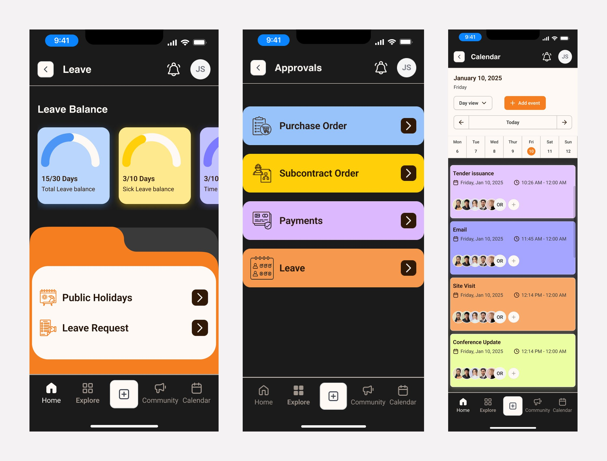
The problem
Scattered tools, slow approvals, nothing built for a phone.
Data was spread across systems, approvals waited on desktops, and site staff couldn't report progress on the move.
Users
Four groups, one goal: every daily task in a few taps.
| User | Main need |
|---|---|
| All employees | Check in and out, see leave balance, apply for leave, get letters |
| Sales team | Log leads, enquiries, events and daily sales activity |
| Site / project team | Submit daily and weekly progress reports, raise and close snags |
| Managers | Approve leave and expenses quickly, track progress |
Information architecture
Three modules on one shared foundation, so it never feels like three apps.
- Check in → live timer → check out
- Apply for leave → track approval
- Letters and documents
- Today's sales activity
- Add or update leads and enquiries
- Log DSA activity and events
- Project tasks and progress
- Daily and weekly progress reports
- Raise → assign → resolve snags
Design system
I built the system first, so 50+ screens stayed consistent with one designer.
- Foundations: dark theme with an orange accent, cream input fields, a type scale, spacing and a mobile grid.
- Components: inputs, multi-step forms, cards, lists, status badges, alerts, timers, approval cards, simple charts.
- States: empty, loading, error, pending, approved, rejected.
- Patterns: one card pattern for leave, expense and report approvals; one list pattern for leads, tasks and snags; colour-coded cards in calendars and task lists.
Result: less design debt and a cleaner handoff to engineering.
Decisions
Key design decisions
| Decision | Why |
|---|---|
| Three modules under one bottom navigation | Switch context without switching apps |
| Today's actions first on the home dashboard | Check-in and approvals are the most frequent tasks |
| Status as colour + label badges | Readable at a glance, not colour alone |
| Long forms split into short steps | Progress reports and leave requests are easier on a phone |
| Charts kept to simple bars and totals | Dense dashboards don't read on small screens |
Final screens
Every module, from login to site reports.
Dark mobile UI with an orange accent and cream input fields, one pattern for cards and lists across all three modules.
Shared foundationLogin, home, approvals, calendar, insights
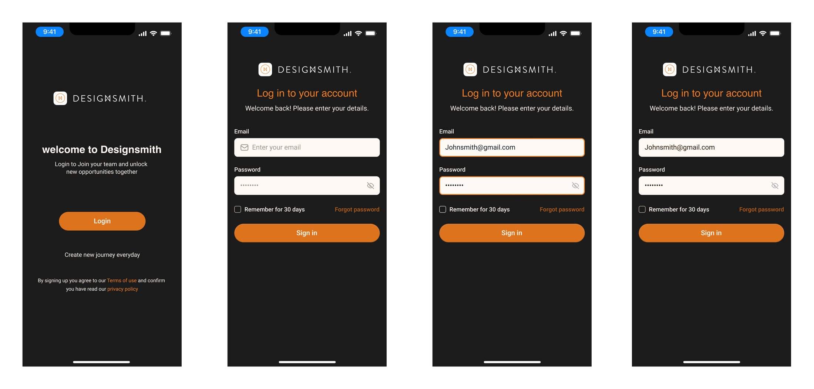
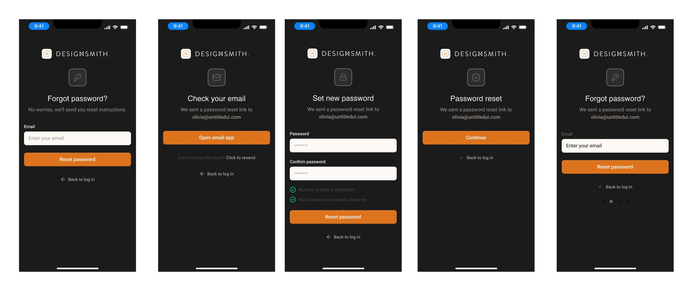
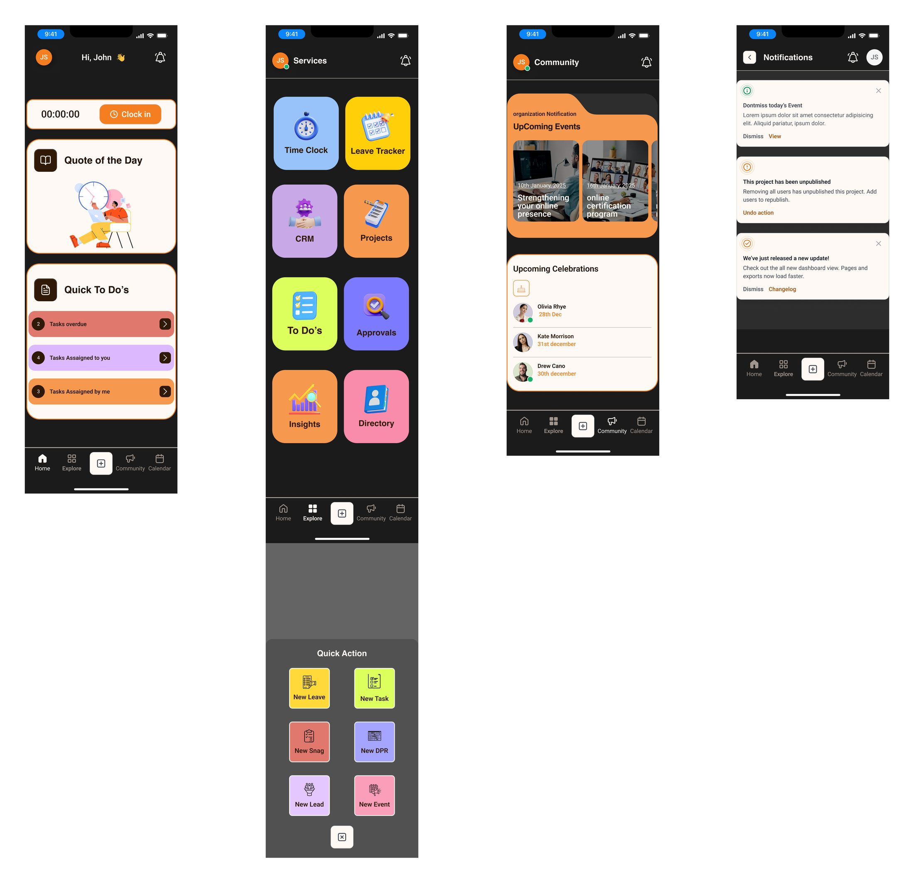
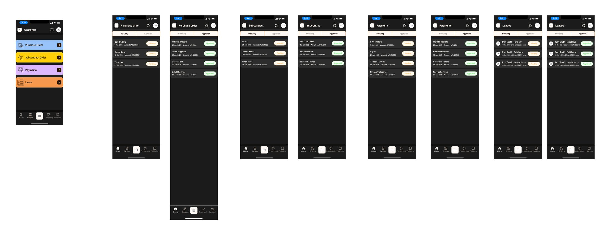
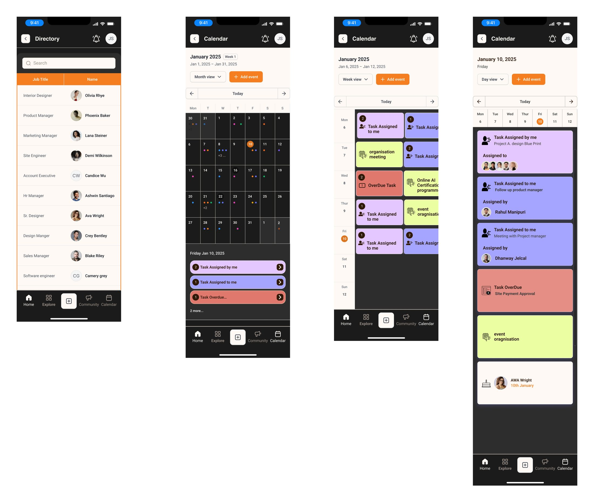
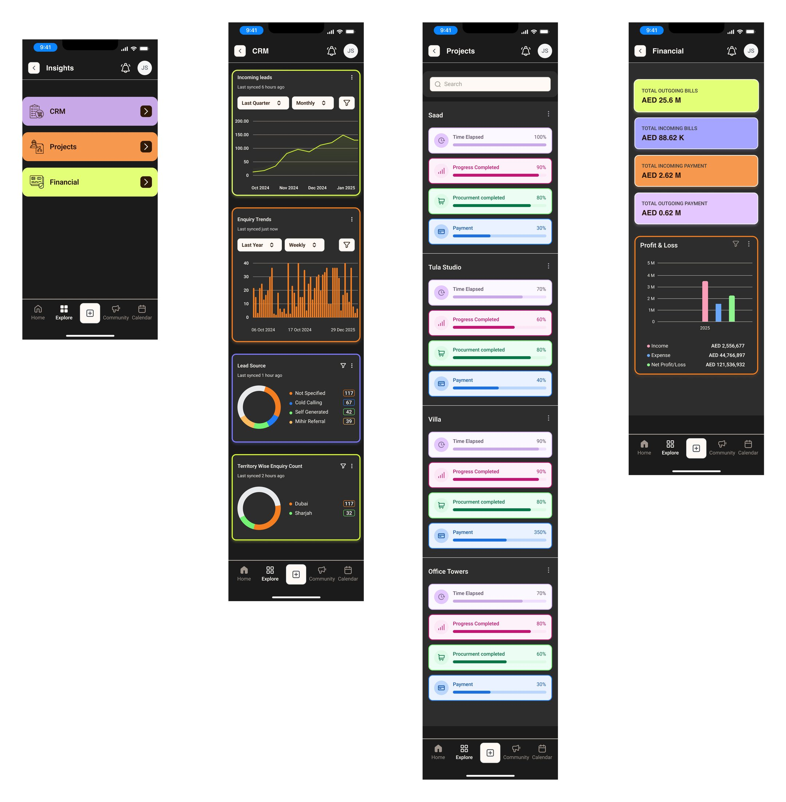
HRMSTime clock, time sheet, leave
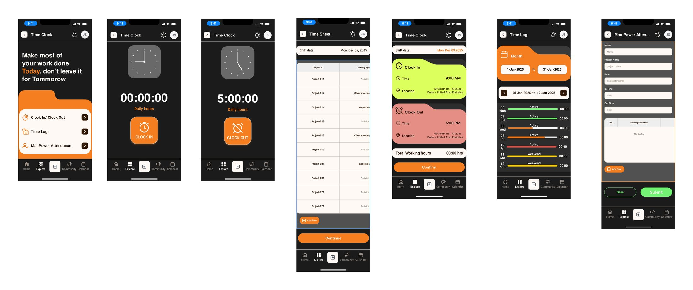
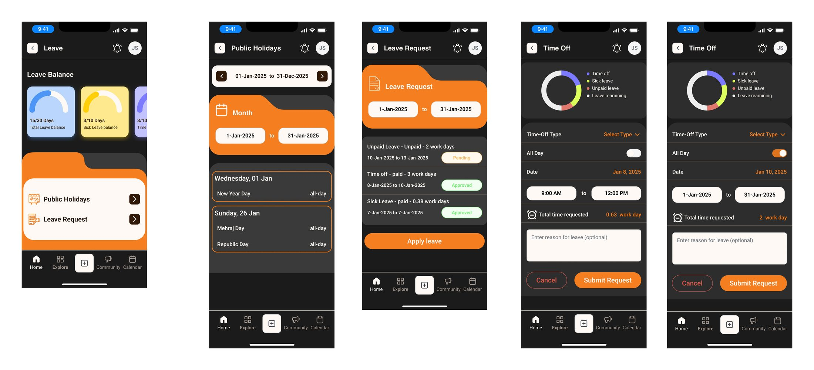
CRMDashboard, leads, enquiries, events, calendar
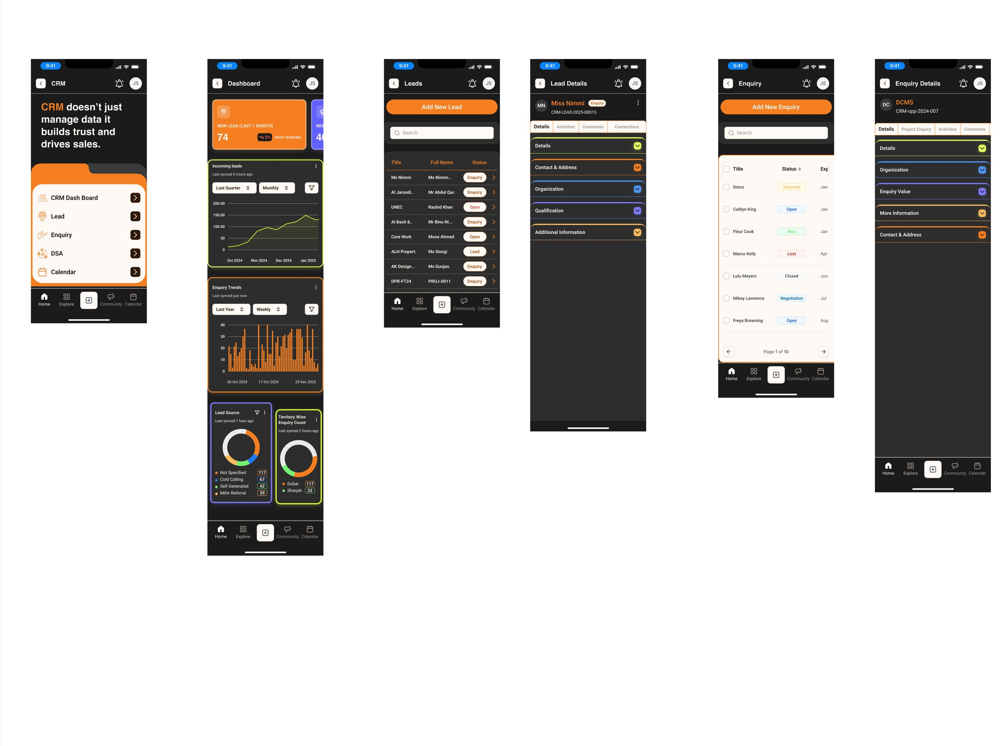
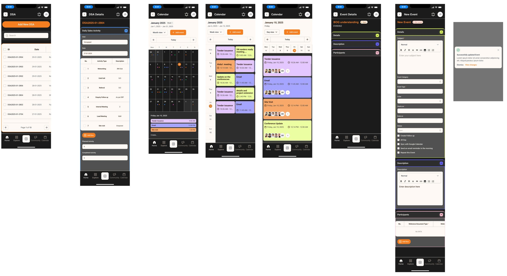
ProjectsTasks, project details, snags, weekly reports
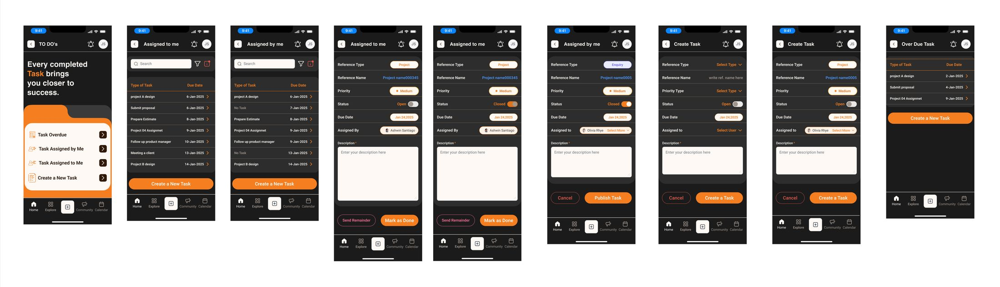
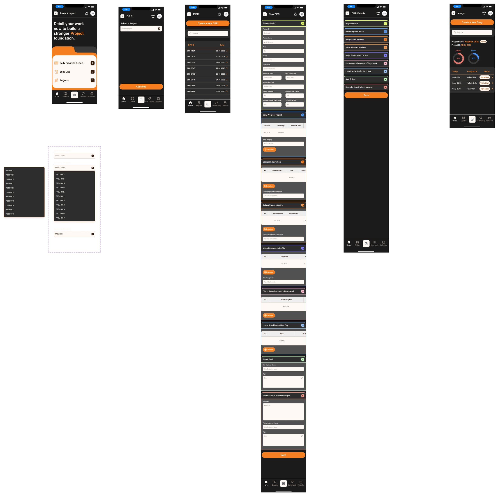
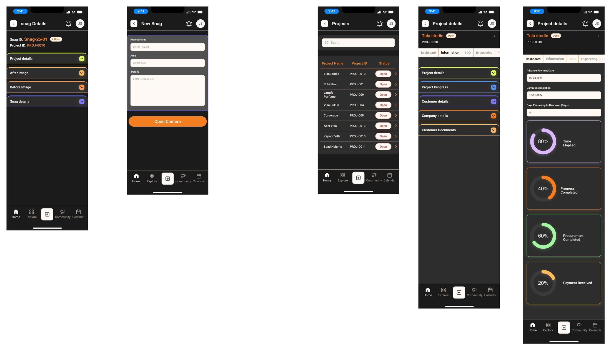
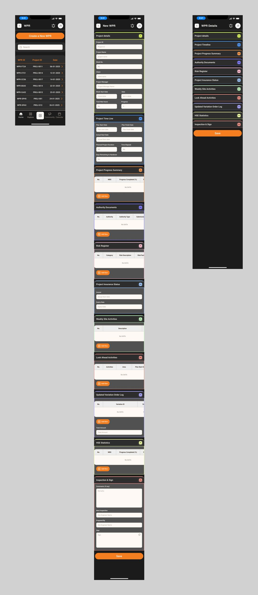
Outcome
One app replaced several tools.
- HR, sales and project work in one login.
- Leave and expense approvals moved to a few taps on mobile.
- A reusable system made new screens faster to design and build.
I handed off annotated Figma screens, component specs and interaction states to engineering.
What I learned: building the system before the screens was the right call. Next time I'd test with site staff earlier, since progress reports and snags are logged outdoors, often one-handed.
Next case study
Face Recognition Attendance →